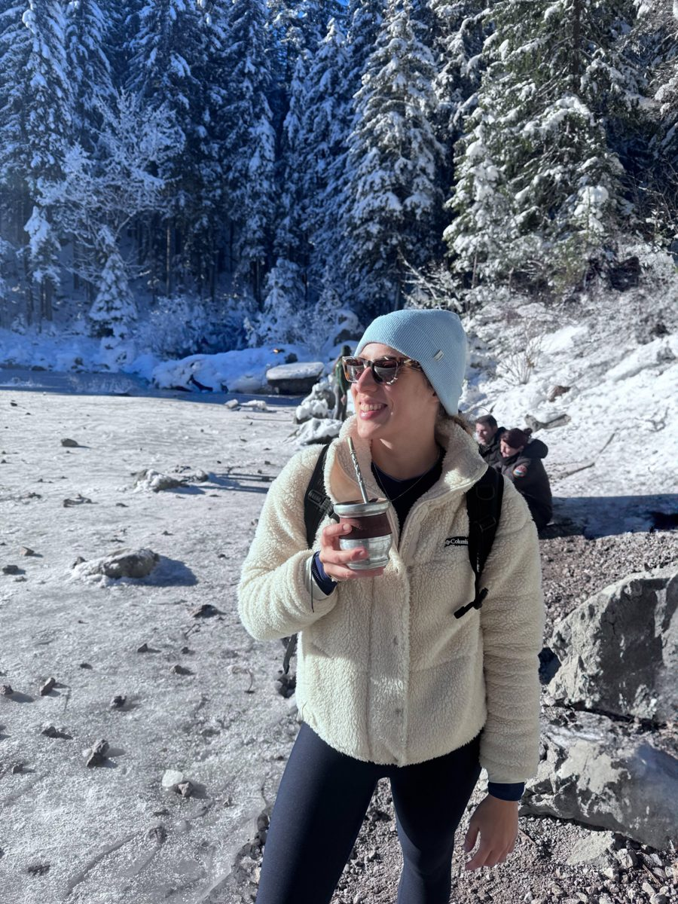

The full version is in my CV (PDF).
- since 2023
PhD Candidate in Economics and Social Sciences (Dr. rer. pol.) & Research AssociateChair of Sport and Health Management, TUM · Supervisor: Prof. Dr. Jörg Koenigstorfer Design and execution of empirical studies, publication and conference work, contribution to an EU-funded research project, teaching and supervision.
- Jan – May 2026
Visiting PhD StudentLow Harm Hedonism Initiative, The University of Queensland, Brisbane · Hosts: Prof. Sara Dolnicar, Dr. David Fechner Funded by an Exchange@UQ Grant and the TUM School of Management internationalization fund.
- 2022 – 2023
Junior Consultant, Consumer PanelGfK (now NielsenIQ) Consumer insights on fresh food categories for FMCG and food-retail clients across European markets.
- 2019 – 2022
M.Sc. ManagementTechnical University of Munich Thesis: “Plant-based, Insect-based, or Cultured Meat? The Acceptance of Alternative Proteins in the Bavarian Population.”
- 2016 – 2019
B.Sc. Health SciencesTechnical University of Munich · exchange semester at Universidad Católica de Valencia, Spain Thesis: “How Much Physical Activity Do Children and Adolescents Engage In? - Comparison of Children with Congenital Heart Disease and Healthy Peers Using Wrist-Worn Wearables.”
Additional Qualifications
- 2020 – 2024Certified NutritionistImpulse e.V.
- 2019Fitness Trainer, B LicenseTechnical University of Munich

Off the clock
Beyond Academia
Health and wellbeing are not only something I research, but something I try to live. Outside academia, you will find me in the gym, on my road bike or an indoor bike, running, swimming, on the yoga mat or on skis. My Argentinian side makes sure there is always a mate within reach, even on a winter hike in the snow.